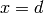
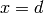
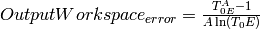

SANSWideAngleCorrection dialog.
Table of Contents
| Name | Direction | Type | Default | Description |
|---|---|---|---|---|
| SampleData | Input | MatrixWorkspace | Mandatory | A workspace cropped to the detector to be reduced (the SAME as the input to [[Q1D]]); used to verify the solid angle. The workspace is not modified, just inspected. |
| TransmissionData | Input | MatrixWorkspace | Mandatory | The transmission data calculated, referred to as <math>T_0</math> in equations in discussion section |
| OutputWorkspace | Output | MatrixWorkspace | Mandatory | The transmission corrected SANS data, normalised (divided) by <math>T_0</math>, see discussion section |
Looking at Computing guide for Small Angle Scattering Experiments by Ghosh, Egelhaaf & Rennie, we see that for scattering at larger angles the transmission should be modified due to the longer path length after the scattering event.
The longer path length after scattering will also slightly increase the probability of a second scattering event, but this is not dealt with here.
If our on-axis transmission is  through a sample of thickness
through a sample of thickness
 , then the transmission at some other thickness
, then the transmission at some other thickness  is
is
 where attenuation coefficient
where attenuation coefficient
 .
.
If a neutron scatters at angle  at distance
into the sample, its total transmission is then:
at distance
into the sample, its total transmission is then:

 should be integrated and averaged between
should be integrated and averaged between  and .
and .
Hammouda, gives an approximate result for the integral, see page 208 of http://www.ncnr.nist.gov/staff/hammouda/the_SANS_toolbox.pdf SANS toolbox:

For:

For example if  and
and  then
then
 , a shift of
, a shift of  % of the SANS curve. Note
that the result is independent of sample thickness.
% of the SANS curve. Note
that the result is independent of sample thickness.
is a function of neutron wavelength, whilst  is a
function of detector pixel location.
is a
function of detector pixel location.
The output of this algorithm is:

The error propagation follows this formula:

Which means, that we do not consider the error in the definition of the
(the parameter A)
To enable the Wide Angle correction use the User File settings:
SAMPLE/PATH/ON
More information on: SANS_User_File_Commands#SAMPLE
The output of SANSWideAngleCorrection is used as WavePixelAdj parameter at Q1D v2.
The equation for the reduction is (see Q1D v2)

But,  is not really , because of the wide
angles, it is now
is not really , because of the wide
angles, it is now  or
or  .
.
So, we decided to have a new factor that changes this equation to:

Where Corr (Correction factor) in this case will be:

Which is the OutputWorkspace of SANSWideAngleCorrection.
This parameter enters inside Q1D v2 as WavePixelAdj. But, this is all done for you inside the Reduction Script.
The transmission correction applied at SNS is described here, and it is applied through the ApplyTransmissionCorrection v1 algorithm. The correction applied there is an approximation for the same equations described here. The picture above compare their results

Note a difference among them is when they are applied. At SNS, the correction is applied before averaging the counters per bin inside Q1D v2 algorithm, while at ISIS, it is used after, inside the Q1D v2 algorithm, for the division of the counters per bin normalized by the transmission counters.
Annie Brulet et al. - Improvement of data treatment in SANS - J. Appl. Cryst. (2007). 40
Ghosh, Egelhaaf & Rennie - Computing guide for Small Angle Scattering Experiments
Example - Correcting Some Dummy Data
# Create some dummy data, but crop it for quick demonstration purposes.
sample = CreateSimulationWorkspace(Instrument='SANS2D', BinParams=[5,500,100005], UnitX='TOF')
sample = CropWorkspace(sample,StartWorkspaceIndex=0,EndWorkspaceIndex=20)
# Create a dummy transmission workspace.
transmission = CropWorkspace(sample,StartWorkspaceIndex=10,EndWorkspaceIndex=10)
transmission *= 2
corrected_data = SANSWideAngleCorrection(sample, transmission)
print "%f was corrected to %f." % (sample.readY(19)[0], corrected_data.readY(19)[0])
Output:
1.000000 was corrected to 1.004997.
Categories: Algorithms | CorrectionFunctions | TransmissionCorrections